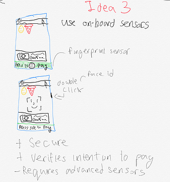

Improving The Venmo User Experience
Discovery
Interviewing users about their experience using Venmo
and discovering pain points
During my discovery phase three things stood out after interviewing users on their Venmo experiences: group dynamics, accidental payments, and privacy. Specific feedback include:
- Wanting a more efficient way to deal with group charges - such as splitting a tab between multiple people
- Accidentally sending money to someone
- Similarly, sending a payment and wanting to cancel the payment
- Wanting to view if someone saw a request for money
- Using the public transactions to identify who is hanging out
- Wanting bank transfers to deposit quicker
After going through the feedback, I thought the most immediate problem to tackle would be addressing the issue of accidental payments. The problem isn't that users are sending money accidentally, the problem is that Venmo is not doing a good enough job confirming intention to send money.
User Flow
The first step was drawing out the existing flow of how money is sent from user A to user B. The problems that stood out to me was that once the user presses the green pay button they nearly immediately send money, without a second opportunity to change their mind. (technically there is a short window to cancel the payment - as shown in the last view - however this cancelation button does not respond nearly in time to reliably give users a second chance to change their mind). The interaction looks something like this:
In particular, in the last view the cancel button is hidden in the top left corner, the payment processes very quickly (~3 seconds), and there is a lot of unused white space, which given the previous screens' use of such space, can be a distraction to a user trying to find a cancel button in a time sensitive environment. As indicated by the interview process, this turned out to be a huge point of frustration for Venmo users.

Develop
Iterating several solutions
Above: The current Venmo method of dealing with payment cancelations.
The first idea I had was to expand on the green button to pay, so that when user taps the button as the payment is processing the user has the option to cancel the payment.
The second idea was to replace the tap to pay button with a slide to pay button. With the tap to pay button it was not obvious that tapping pay immediately pays the recipient. Sliding provides a greater sense of permanence in the transaction.
The third idea was to use the smartphone's onboard sensors to verify payment. Phones with a fingerprint sensor would require the user scan their fingerprint to confirm the payment, while newer iPhones would require tapping the side button to activate face id. The advantage of this solution is it is the most secure and also conveys a sense of permanence in triggering the transaction.
My final idea was inspired by solutions for Email that delay the message being sent by a specified amount of time. This solution would have the user tap to pay as normally, but then would be presented with an view saying that the payment will confirm in 60 seconds, where they can either swipe to sent money immediately or cancel the transaction.
Deliver
After going through the pros and cons of each ideation I decided to implement idea 2, figuring it would keep thing simple enough in terms of user demands (not having to go through too many menus/settings), while still maintaining security and verifying user intention.